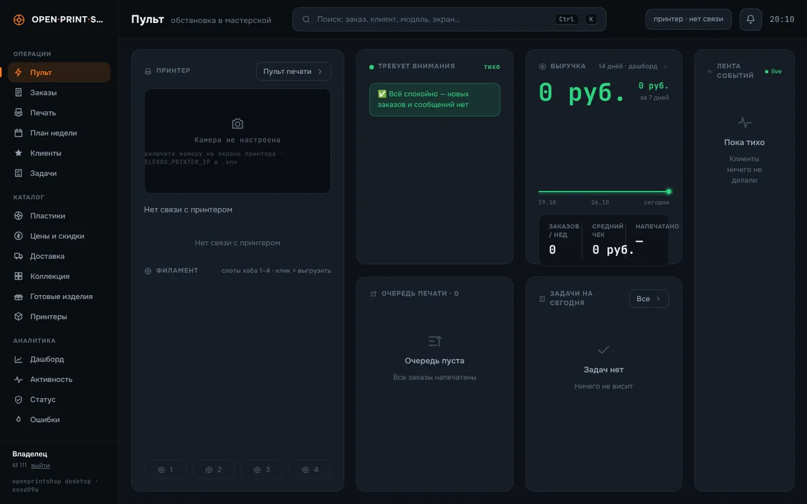
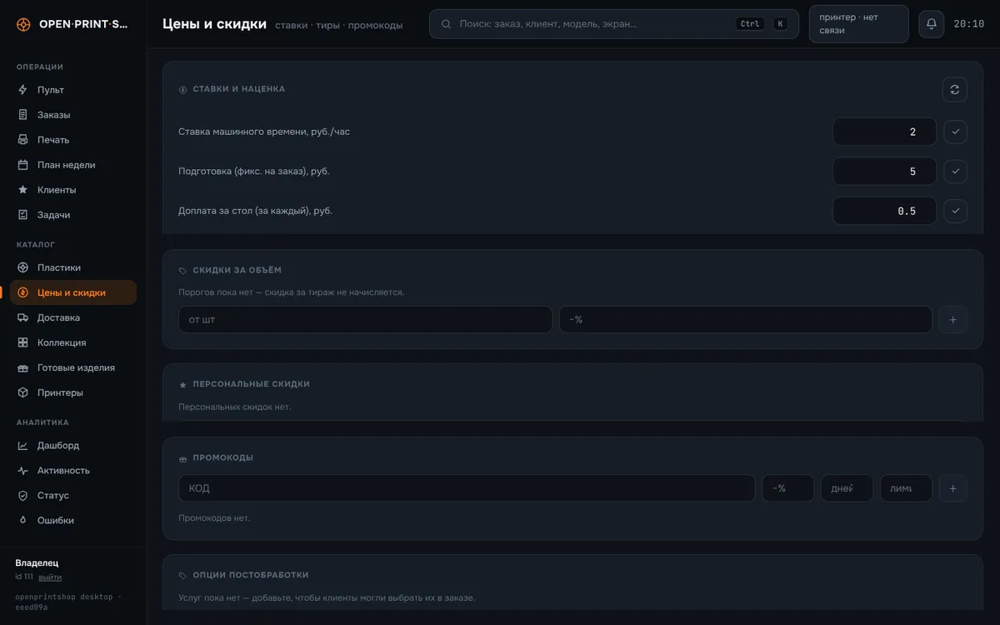
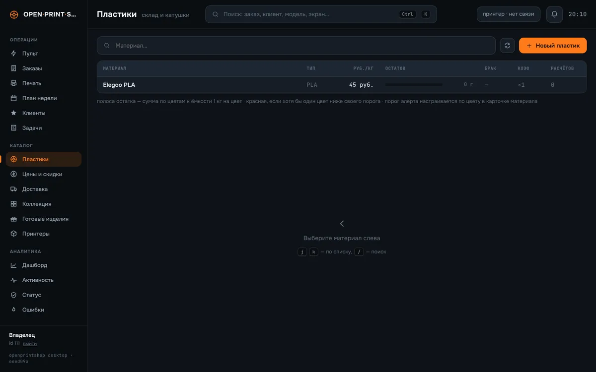

Открытая система приёма заказов для студий 3D-печати
Клиент присылает модель вашему Telegram-боту и за секунды получает цену, посчитанную по настоящему слайсеру. Вы ведёте заказы, клиентов, катушки и принтеры в настольной админке на ПК студии.
Свободное ПО под лицензией GNU AGPL v3.0.

Что умеет
Бот для клиентов и админка для студии — оба работают с одного ПК.
Цена за секунды
- Прислать файл модели (
.stl,.3mf,.obj,.step,.zip) или ссылку на Printables, Thingiverse или прямой файл. - Увидеть 3D-превью и получить цену, потом уточнить: пластик, цвет, качество, прочность, тираж, срочность.
- Корзина и заказы со статусами, чат со студией, онлайн-оплата через Telegram Payments (провайдер подключает сама студия), доставка с трекингом, PDF-смета.
- Витрина готовых изделий и конфигуратор органайзеров gridfinity.
Вся мастерская в одном окне
- Очередь заказов и печати, дашборд выручки, CRM: история клиента, сегменты, рассылки, задачи.
- Своя формула цены: пластик, машинное время, подготовка, буфер на брак, наценка, скидки за тираж, минимальная цена.
- Учёт катушек с тарой и журналом движения, база калибровок с QR-паспортами.
- Роли владелец/оператор, white-label (своё имя, логотип, цвет), бэкапы с копией на другой носитель, самообновление из git, журнал ошибок.
Управление и журнал печати
- Elegoo Centauri Carbon 2 — глубже всего: статус, таймлапсы, допечатка со слоя.
- Klipper / Moonraker.
- Bambu Lab по локальной сети (бета).
Настоящий слайсер — настоящие цифры
- Точные граммы и время от слайсера на том же ПК: OrcaSlicer (рекомендуется), ElegooSlicer или Bambu Studio.
- Встроенная оценка даёт мгновенную первую цену.
Конвертация STEP→STL (FreeCAD), параметрические модели (OpenSCAD), дашборд на дисплей TURZX 8.8" по USB, аватарки ИИ (видеокарта NVIDIA), умный поиск по каталогу, поиск моделей на Printables и Thingiverse.
Скриншоты
Сняты с настольной админки, запущенной локально на чистой установке, поэтому везде нули и короткие списки.


Как устроено
Всё работает на одном постоянно включённом Windows-ПК студии;
watchdog.py держит бота живым.
Telegram ──► бот + веб-сервер (run.py, aiogram + aiohttp) ──► SQLite (data/) ▲ │ │ │ │ └─► слайсер CLI (OrcaSlicer / ElegooSlicer / Bambu Studio) │ │ → точные граммы и время │ └─► принтеры в локальной сети (Elegoo MQTT/HTTP, Moonraker, Bambu) │ Mini App ◄── публичный HTTPS-адрес: Cloudflare Tunnel или свой прокси
Быстрый старт
Нужны Windows 10/11 x64 на ПК, который не выключается, токен бота от @BotFather, ваш Telegram ID (@userinfobot) и слайсер на том же ПК.
Установка одной командой (PowerShell)
Скрипт при необходимости поставит Python и Git через winget, склонирует репозиторий в
C:\OpenPrintShop\bot, создаст окружение, спросит токен бота и ID
администраторов и поставит сторожа в автозапуск.
irm https://raw.githubusercontent.com/openprintshop/openprintshop/main/tools/installer/install.ps1 -OutFile install.ps1 powershell -ExecutionPolicy Bypass -File .\install.ps1
Или вручную
git clone https://github.com/openprintshop/openprintshop.git
cd openprintshop
python -m venv .venv
.\.venv\Scripts\pip install -r requirements.txt
copy .env.example .env # BOT_TOKEN и ADMIN_IDS
.\.venv\Scripts\python run.py
Открыть
Напишите боту /start. На ПК студии настольная админка открывается по адресу
http://127.0.0.1:8081/app/desk/. Цены, пластики, принтеры, бренд, оплата
и доставка настраиваются в админке.
Разработка на Linux или macOS — пошагово в docs/local-setup.md: установка, запуск, результаты тестов и известные проблемы вне Windows.
Ссылки
- Репозиторий — код, задачи, релизы
- README — требования, установка, обновления, разработка
- docs/local-setup.md — локальная установка, запуск и тесты
- Как помочь проекту · Безопасность